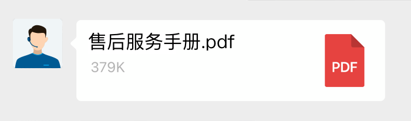
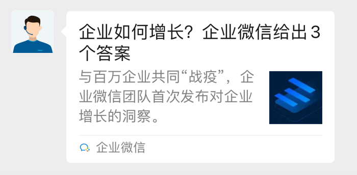
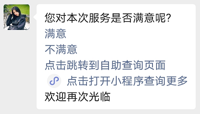

目录
当微信客户处于“新接入待处理”或“由智能助手接待”状态下，可调用该接口给用户发送消息。
注意仅当微信客户在主动发送消息给客服后的48小时内，企业可发送消息给客户，最多可发送5条消息；若用户继续发送消息，企业可再次下发消息。
支持发送消息类型：文本、图片、语音、视频、文件、图文、小程序、菜单消息、地理位置、获客链接。
目前该接口允许下发消息条数和下发时限如下：
| 用户动作 | 允许下发条数限制 | 下发时限 |
|---|---|---|
| 用户发送消息 | 5条 | 48 小时 |
请求方式: POST(HTTPS)
请求地址: https://qyapi.weixin.qq.com/cgi-bin/kf/send_msg?access_token=ACCESS_TOKEN
参数说明：
| 参数 | 是否必须 | 说明 |
|---|---|---|
| access_token | 是 | 调用接口凭证 |
权限说明:
调用的应用需要满足如下的权限
| 应用类型 | 权限要求 |
|---|---|
| 自建应用 | 配置到「 微信客服- 可调用接口的应用」中 |
| 第三方应用 | 具有“微信客服->管理账号、分配会话和收发消息”权限 |
| 代开发自建应用 | 具有“微信客服->管理账号、分配会话和收发消息”权限 |
注： 从2023年12月1日0点起，不再支持通过系统应用secret调用接口，存量企业暂不受影响 查看详情
返回结果:
{ "errcode": 0, "errmsg": "ok", "msgid": "MSG_ID" }点击复制
注意：接口返回成功，不代表消息最终发送成功，还需要关注消息发送失败事件的回调事件。
参数说明:
| 参数 | 类型 | 说明 |
|---|---|---|
| errcode | int32 | 返回码 |
| errmsg | string | 错误码描述 |
| msgid | string | 消息ID。如果请求参数指定了msgid，则原样返回，否则系统自动生成并返回。若指定msgid，开发者需确保客服账号内唯一，否则接口返回错误。 不多于32字节 字符串取值范围(正则表达式)：[0-9a-zA-Z_-]* |
请求示例：
{ "touser" : "EXTERNAL_USERID", "open_kfid": "OPEN_KFID", "msgid": "MSGID", "msgtype" : "text", "text" : { "content" : "你购买的物品已发货，可点击链接查看物流状态http://work.weixin.qq.com/xxxxxx" } }点击复制
参数说明：
| 参数 | 是否必须 | 类型 | 说明 |
|---|---|---|---|
| touser | 是 | string | 指定接收消息的客户UserID |
| open_kfid | 是 | string | 指定发送消息的客服账号ID |
| msgid | 否 | string | 指定消息ID |
| msgtype | 是 | string | 消息类型，此时固定为：text |
| text | 是 | obj | 文本消息 |
| text.content | 是 | string | 消息内容，最长不超过2048个字节 |
请求示例：
{ "touser" : "EXTERNAL_USERID", "open_kfid": "OPEN_KFID", "msgid": "MSGID", "msgtype" : "image", "image" : { "media_id" : "MEDIA_ID" } }点击复制
请求参数：
| 参数 | 是否必须 | 类型 | 说明 |
|---|---|---|---|
| touser | 是 | string | 指定接收消息的客户UserID |
| open_kfid | 是 | string | 指定发送消息的客服账号ID |
| msgid | 否 | string | 指定消息ID |
| msgtype | 是 | string | 消息类型，此时固定为：image |
| image | 是 | obj | 图片消息 |
| image.media_id | 是 | string | 图片文件id，可以调用上传临时素材接口获取 |
请求示例：
{ "touser" : "EXTERNAL_USERID", "open_kfid": "OPEN_KFID", "msgtype" : "voice", "voice" : { "media_id" : "MEDIA_ID" } }点击复制
参数说明：
| 参数 | 是否必须 | 类型 | 说明 |
|---|---|---|---|
| touser | 是 | string | 指定接收消息的客户UserID |
| open_kfid | 是 | string | 指定发送消息的客服账号ID |
| msgid | 否 | string | 指定消息ID |
| msgtype | 是 | string | 消息类型，此时固定为：voice |
| voice | 是 | obj | 语音消息 |
| voice.media_id | 是 | string | 语音文件id，可以调用上传临时素材接口获取 |
请求示例：
{ "touser" : "EXTERNAL_USERID", "open_kfid": "OPEN_KFID", "msgid": "MSGID", "msgtype" : "video", "video" : { "media_id" : "MEDIA_ID" } }点击复制
参数说明：
| 参数 | 是否必须 | 类型 | 说明 |
|---|---|---|---|
| touser | 是 | string | 指定接收消息的客户UserID |
| open_kfid | 是 | string | 指定发送消息的客服账号ID |
| msgid | 否 | string | 指定消息ID |
| msgtype | 是 | string | 消息类型，此时固定为：video |
| video | 是 | obj | 视频消息 |
| video.media_id | 是 | string | 视频媒体文件id，可以调用上传临时素材接口获取 |
视频消息展现：
请求示例：
{ "touser" : "EXTERNAL_USERID", "open_kfid": "OPEN_KFID", "msgid": "MSGID", "msgtype" : "file", "file" : { "media_id" : "1Yv-zXfHjSjU-7LH-GwtYqDGS-zz6w22KmWAT5COgP7o" } }点击复制
参数说明：
| 参数 | 是否必须 | 类型 | 说明 |
|---|---|---|---|
| touser | 是 | string | 指定接收消息的客户UserID |
| open_kfid | 是 | string | 指定发送消息的客服账号ID |
| msgid | 否 | string | 指定消息ID |
| msgtype | 是 | string | 消息类型，此时固定为：file |
| file | 是 | obj | 文件消息 |
| file.media_id | 是 | string | 文件id，可以调用上传临时素材接口获取 |
文件消息展现：

请求示例：
{ "touser" : "EXTERNAL_USERID", "open_kfid": "OPEN_KFID", "msgid": "MSGID", "msgtype" : "link", "link" : { "title" : "企业如何增长？企业微信给出3个答案", "desc" : "今年中秋节公司有豪礼相送", "url" : "URL", "thumb_media_id": "MEDIA_ID" } }点击复制
参数说明：
| 参数 | 是否必须 | 类型 | 说明 |
|---|---|---|---|
| touser | 是 | string | 指定接收消息的客户UserID |
| open_kfid | 是 | string | 指定发送消息的客服账号ID |
| msgid | 否 | string | 指定消息ID |
| msgtype | 是 | string | 消息类型，此时固定为：link |
| link | 是 | obj | 链接消息 |
| link.title | 是 | string | 标题，不超过128个字节，超过会自动截断 |
| link.desc | 否 | string | 描述，不超过512个字节，超过会自动截断 |
| link.url | 是 | string | 点击后跳转的链接。 最长2048字节，请确保包含了协议头(http/https) |
| link.thumb_media_id | 是 | string | 缩略图的media_id, 可以通过素材管理接口获得。此处thumb_media_id即上传接口返回的media_id |
图文链接消息展现：

请求示例：
{ "touser" : "EXTERNAL_USERID", "open_kfid": "OPEN_KFID", "msgid": "MSGID", "msgtype" : "miniprogram" "miniprogram" : { "appid": "APPID", "title": "欢迎报名夏令营", "thumb_media_id": "MEDIA_ID", "pagepath": "PAGE_PATH" } }点击复制
参数说明：
| 参数 | 是否必须 | 类型 | 说明 |
|---|---|---|---|
| touser | 是 | string | 指定接收消息的客户UserID |
| open_kfid | 是 | string | 指定发送消息的客服账号ID |
| msgid | 否 | string | 指定消息ID |
| msgtype | 是 | string | 消息类型，此时固定为：miniprogram |
| miniprogram | 是 | obj | 小程序消息 |
| miniprogram.appid | 是 | string | 小程序appid |
| miniprogram.title | 否 | string | 小程序消息标题，最多64个字节，超过会自动截断 |
| miniprogram.thumb_media_id | 是 | string | 小程序消息封面的mediaid，封面图建议尺寸为520*416 |
| miniprogram.pagepath | 是 | string | 点击消息卡片后进入的小程序页面路径。注意路径要以.html为后缀，否则在微信中打开会提示找不到页面 |
请求示例：
{ "touser": "EXTERNAL_USERID", "open_kfid": "OPEN_KFID", "msgid": "MSGID", "msgtype": "msgmenu", "msgmenu": { "head_content": "您对本次服务是否满意呢? ", "list": [ { "type": "click", "click": { "id": "101", "content": "满意" } }, { "type": "click", "click": { "id": "102", "content": "不满意" } }, { "type": "view", "view": { "url": "https://work.weixin.qq.com", "content": "点击跳转到自助查询页面" } }, { "type": "miniprogram", "miniprogram": { "appid": "wx123123123123123", "pagepath": "pages/index.html?userid=zhangsan&orderid=123123123", "content": "点击打开小程序查询更多" } }, { "type": "text", "text": { "content": "纯文本，支持\n换行", "no_newline": 0 } } ], "tail_content": "欢迎再次光临" } }点击复制
参数说明：
| 参数 | 必须 | 类型 | 说明 |
|---|---|---|---|
| touser | 是 | string | 指定接收消息的客户UserID |
| open_kfid | 是 | string | 指定发送消息的客服账号ID |
| msgid | 否 | string | 指定消息ID |
| msgtype | 是 | string | 消息类型，此时固定为：msgmenu |
| msgmenu | 是 | obj | 菜单消息 |
| msgmenu.head_content | 否 | string | 起始文本 不多于1024字节 |
| msgmenu.list | 否 | obj[] | 菜单项配置，不超过50个，其中click/view/miniprogram的菜单类型加起来不超过10个 |
| msgmenu.list.type | 是 | string | 菜单类型。click-回复菜单 view-超链接菜单 miniprogram-小程序菜单 text-文本 |
| msgmenu.list.click | 否 | obj | type为click的菜单项 |
| msgmenu.list.click.id | 否 | string | 菜单ID。建议只使用以下字符集a-z、A-Z、0-9、_，不建议用#，否则可能会出现截断。不少于1字节 不多于128字节 |
| msgmenu.list.click.content | 是 | string | 菜单显示内容 不少于1字节 不多于128字节 |
| msgmenu.list.view | 否 | obj | type为view的菜单项 |
| msgmenu.list.view.url | 是 | string | 点击后跳转的链接。 不少于1字节 不多于2048字节 |
| msgmenu.list.view.content | 是 | string | 菜单显示内容。 不少于1字节 不多于1024字节 |
| msgmenu.list.miniprogram | 否 | obj | type为miniprogram的菜单项 |
| msgmenu.list.miniprogram.appid | 是 | string | 小程序appid。 不少于1字节 不多于32字节 |
| msgmenu.list.miniprogram.pagepath | 是 | string | 点击后进入的小程序页面。 不少于1字节 不多于1024字节 |
| msgmenu.list.miniprogram.content | 是 | string | 菜单显示内容。 不多于1024字节 |
| msgmenu.list.text | 否 | obj | type为text的菜单项 |
| msgmenu.list.text.content | 是 | string | 文本内容，支持\n（\和n两个字符）换行。不少于1字节 不多于256字节 |
| msgmenu.list.text.no_newline | 否 | bool | 内容后面是否不换行，0-换行 1-不换行，默认为0。 可用于普通文本和其他菜单类型混排，消息内容更丰富 |
| msgmenu.tail_content | 否 | string | 结束文本 不多于1024字节 |
其中，“满意”和“不满意”两个菜单当用户点击后，用户会自动回复一条文本消息，同时附带对应的菜单ID。
菜单消息展现：

请求示例：
{ "touser" : "EXTERNAL_USERID", "open_kfid": "OPEN_KFID", "msgid": "MSGID", "msgtype" : "location", "location": { "name": "测试小区", "address": "实例小区，不真实存在，经纬度无意义", "latitude": 0, "longitude": 0 } }点击复制
参数说明：
| 参数 | 是否必须 | 类型 | 说明 |
|---|---|---|---|
| touser | 是 | string | 指定接收消息的客户UserID |
| open_kfid | 是 | string | 指定发送消息的客服账号ID |
| msgid | 否 | string | 指定消息ID |
| msgtype | 是 | string | 消息类型，此时固定为：location |
| location | 是 | obj | 地理位置消息 |
| location.name | 否 | string | 位置名 |
| location.address | 否 | string | 地址详情说明 |
| location.latitude | 是 | float | 纬度，浮点数，范围为90 ~ -90 |
| location.longitude | 是 | float | 经度，浮点数，范围为180 ~ -180 |
将获客链接转成名片消息下发给微信客户。
微信客户通过这种方式打开名片，在获客助手的数据统计上，暂不会计算到打开链接的客户数中，其他添加等数据不影响。
请求示例：
{ "touser" : "EXTERNAL_USERID", "open_kfid": "OPEN_KFID", "msgid": "MSGID", "msgtype" : "ca_link", "ca_link": { "link_url": "https://work.weixin.qq.com/ca/xxxxxx" } }点击复制
参数说明：
| 参数 | 是否必须 | 类型 | 说明 |
|---|---|---|---|
| touser | 是 | string | 指定接收消息的客户UserID |
| open_kfid | 是 | string | 指定发送消息的客服账号ID |
| msgid | 否 | string | 指定消息ID |
| msgtype | 是 | string | 消息类型，此时固定为：ca_link |
| ca_link | 是 | obj | 获客链接消息 |
| ca_link.link_url | 是 | string | 通过获客助手创建的获客链接 |